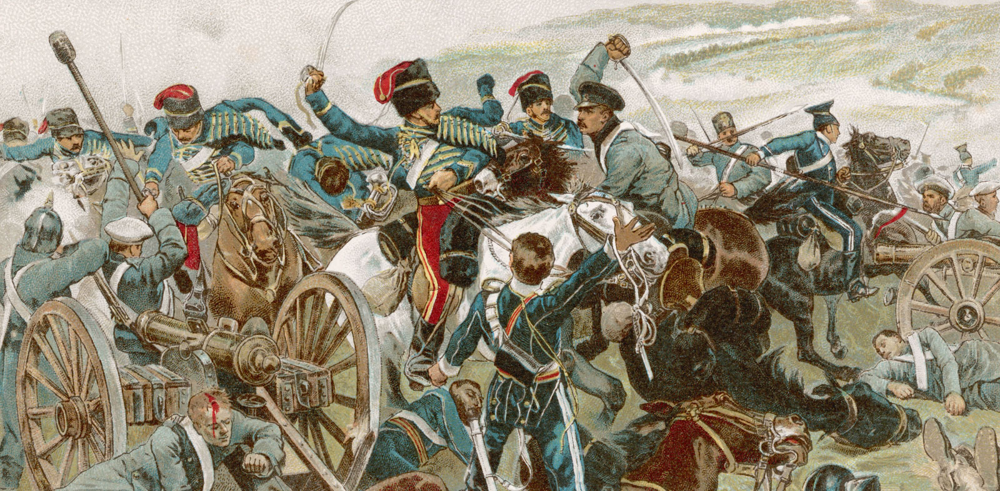

Война — конфликт между политическими образованиями — государствами, племенами, политическими группировками и так далее, — происходящий на почве различных претензий, в форме вооружённого противоборства, военных (боевых) действий между их вооружёнными силами.
Причины и Цели возникновения войн
- Территориальные
- - тип войн, цель которой овладеть территориями.
- Экономические
- - тип войн, цель которой является цель овладеть рынками и природными ресурсами и — как следствие — богатством.
- Порабощение
- - тип войны, цель которой порабощение другой этнической, религиозной группы
- Этнические причины
- – тип войны, в которой стороны конфликта представлены разными этническими группами
- Религиозные причины
- - тип войн, между разными религиозными группамми.
- Общий агрессор
- - тип войн, когда несколько сторон конфлика вступают в коалицию против угрожающего всем противника, с целью усмирить его и обезопасить себя.
Типы войн
Мировые и Локальные
Вооруженные и Невооруженные
Гражданские войны
Воздушная война
Морская война
Ядерная война
Колониальная война
Информационная война
Холодная война

Локальная война — военные действия между двумя и более государствами, ограниченные по политическим целям интересами участвующих в военных действиях между государствами, а по территории — небольшим географическим регионом, как правило, находящимся в границах одной из противоборствующих сторон.
Мировая война — термин, обычно используемый для обозначения двух глобальных конфликтов, беспрецедентных по масштабу событий и количеству жертв, которые произошли в течение XX века (Первая мировая война 28 июля 1914 — 11 ноября 1918 и Вторая мировая война 1 сентября 1939 — 2 сентября 1945). Эти войны затронули большинство государств мира, в том числе все великие державы и крупные государства и охватывали несколько континентов.
Вооружённый конфликт — вооружённое противоборство между государствами или социальными общностями внутри отдельных государств, имеющее целью разрешение экономических, политических, национально-этнических и иных противоречий через ограниченное применение военной силы.
Гражданская война — вооружённая борьба между общественными классами одной страны во время революции.
Воздушная война — ведение воюющими сторонами военных действий в воздушном пространстве с помощью любых летательных аппаратов. Воздушная война включает как воздушную разведку, так и применение летательных аппаратов для нанесения ударов по противнику.
Морская война заключается в вооруженной борьбе на морях и океанах, сюда же относятся военные (боевые) действия на реках, озёрах и искусственных водоёмах
Ядерная война — военный конфликт между государствами, владеющими ядерным оружием, с использованием ядерного и/или термоядерного оружия. В такой войне главным оружием массового поражения является ядерное оружие.
Колониальная война — война с целью завоевания или удержания колоний. Термин применяется исключительно к конфликтам в колониях Великобритании, Франции, Испании, Португалии, Дании, Нидерландов.
Информационная война — описывающий противоборство сторон посредством распространения специально подготовленной информации и противодействия аналогичному внешнему воздействию на себя.В информационной войне могут участвовать как созданные властями структуры, так и отдельные сообщества, группы и лица. Информационная война непрерывна и проводится не только во время вооружённой борьбы, но и в мирное время. Информационная война — самый жесткий вид информационного противоборства. Как правило, методами информационной войны являются вброс дезинформации или представление информации в выгодном для себя ключе
Холодная война — войной в общепринятом смысле это назвать нельзя, стороны конфликата воюют, но исключительно на чужих территориях и зачастую чужими руками
Интересные войны
Война из-за свиньи — 15 июня 1859 года, ровно через 13 лет после подписания Орегонского договора, американский фермер Лиман Катлэр, поселившийся на острове Сан-Хуан в соответствии с законами США, обнаружил, что в его огороде роется большая чёрная свинья и ест его картошку. Это было уже не в первый раз, и перевозбуждённый Катлэр застрелил свинью. Оказалось, что свинья принадлежала ирландцу Чарлзу Гриффину, управлявшему овцефермой Компании Гудзонова залива; у него было несколько свиней, и он им позволял свободно бродить где угодно. До этого инцидента обе стороны конфликта жили в мире. Катлэр предложил Гриффину 10 долларов в качестве компенсации за свинью, но Гриффин потребовал 100. Тогда Катлэр заявил, что вообще ничего не будет платить, так как свинья вторглась на его землю. Когда британские власти пригрозили арестовать Катлэра, американский фермер обратился к своим властям за военной защитой.
Война из-за ведра — В 14 веке в Италии между городом Модена и Болонья вспыхнула настоящая война. А история была такая, один болонский всадник перебежал в Модены и захватил с собой городское ведро с помощью которого он поил своего коня. Власти Болоньи обратились к властям Модены с просьбой вернуть собственность в виде ведра. На что были посланы подальше. В результате начался кровопролитный конфликт, который унес тысячи жизней и продлился двадцать два года. Смешно то, что болонцы не получили свое ведро обратно потому что были побеждены в этой войне.